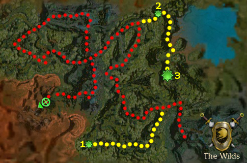

Elite: None / not listed
M10
The Wilds
◉ Mission Map

Click to enlarge · Local cache · Wiki
Summary (click to expand)
After a long hunt for the Shining Blade in order to rescue the Chosen , the heroes are in for a surprise ending.
Region: Maguuma Jungle · Mission: 10 of 25 · Type: Cooperative
✓ Objectives
Hunt down the Shining Blade kidnappers, and rescue the Chosen they have taken hostage.
- Chase the fleeing Shining Blade.
- Rescue the Chosen.
- Discover how the Shining Blade navigates the jungle.
- *BONUS* Defeat the two Centaur chieftains.
→ Walkthrough
This mission is one long trek through the jungle, with confusing branching paths and a wide variety of enemies along the way. Start out heading north and join a pair of White Mantle Knights heading into a clearing. Here you will meet the first of several Entangling Roots. When approached, these creatures will trigger the appearance of a gate of vines at each entrance to the clearing, cutting off your retreat and potentially stranding party members outside. They are also surrounded by hidden spawns including multiple Life Pods, which can make killing them a chore even with the White Mantle's help. Consider keeping back any warriors in the group to avoid triggering all of the popups at once. The vine gate does not block line of sight, and is not triggered by pets, minions, or your White Mantle allies. All gates disappear as soon as the Entangling Roots is killed.
As soon as everything is dead, the White Mantle will continue into the next clearing to the west, where there are multiple exits and converging patrols of Moss Scarabs. You might notice a Shining Blade Scout shouting and running deeper into the jungle; you do not have to catch these scouts, but take note of them, as they will always indicate the correct route to take. When in doubt, follow the map. Take the middle westward road along with any surviving White Mantle Knights; all three paths lead to an Entangling Roots, but on the correct path you will also see a boss ahead on the far side, which also has some hidden scarabs around it. Past the boss, you will come to an overlook where a cutscene will trigger, showing a Shining Blade Scout on another path creating a vine bridge to cross the gorge.
The White Mantle Knights will give up here, but continue north and you will find numerous Centaurs ahead. The Shining Blade Scouts will indicate a path to the left, and you can cut across here, but pay attention to the Centaur patrols, some of which move quite fast and can easily catch your party from behind. Their rangers also leave Flame Traps and spirits of Symbiosis while moving; triggering the traps or attacking the spirit will aggro the group. It may be safer and easier to continue northeast a way before turning back to the west, especially if you are attempting the bonus.
You will reach the bridge created by the Shining Blade before, and on the far side the enemies will change again, with Wind Riders and Jungle Trolls becoming prevalent. The path forks ahead, with two paths in front and a bridge behind; take the right path ahead, and it will lead you to the last Entangling Roots. This time there are no hidden foes, but numerous visible ones which should be pulled out of the clearing before you engage. Turn sharply northeast and you will soon reach the water. From here on, you will be encountering hidden Maguuma Spiders frequently. Follow the Shining Blade Scouts down the southward turn of the stream, and when you encounter one last random boss, turn to the west.
After a short journey, you will see the Chosen under attack by spiders, so move in and fight through several spider waves culminating in the boss Kezra Spindleweb. They are not very threatening, and Evennia will be healing you from the overlook, so you should have little trouble. As soon as the spiders are all dead, the mission is complete.
★ Bonus
The bonus requires that you defeat two Centaur bosses. Instead of following the White Mantle, head south after proceeding past the first Entangling Root. You will find two Centaurs talking to each other (point 1), do not attack them yet; doing so will cause the bonus objective to be incompletable. To initiate the bonus, you have to eavesdrop on their conversation. After their dialogue finishes with the line "I will guard Ramtha Brokenhoof and Horm Frostrider with my life.", kill them. Pick up the Vine Seed that eventually appears by the glowing plants, which is needed to reach the two Centaur chieftains. You can drop the Vine Seed during combat; it will grow branches, knocking down adjacent foes and dealing 20 damage, and finally it will return to bundle form. Carry this item and backtrack to the middle road again.
After fighting the roaming Centaurs, take a detour again to the east (point 2). Place the Vine Seed over the round mark to form a bridge. Head South to where you will find the two Centaur chieftains (point 3): Ramtha Brokenhoof and Horm Frostrider. You can use the high-ground advantage of the entry slope to pull separate groups of Centaurs. Two other centaur bosses will spawn close to your objective bosses, so be careful not to mix them up. After killing Ramtha and Horm, the bonus completion message will display.
◆ Hard Mode
- Early in the mission, Moss Scarabs with Verata's Gaze present difficulty to a minion master, but you will not encounter any more after the first bridge. Maguuma Enchanters with Blackout, Wind Riders with Arcane Conundrum, and Maguuma Spiders with Punishing Shot threaten healers.
☠ Bosses & Elites
Elite: None / not listed
Elite: None / not listed
Elite: None / not listed
Elite: None / not listed
Elite: None / not listed
Elite: None / not listed
Elite: None / not listed
Elite: None / not listed
Elite: None / not listed
Elite: None / not listed
Elite: None / not listed
Elite: None / not listed
Elite: None / not listed
✦ Tips & Notes
Skill recommendations
- Moss Scarabs use Vampiric Touch, take skills that protect against life stealing (e. g. Shielding Hands).
- Life Pods spawn together and heal each other, use anti-caster skills (e. g. Backfire).
- Enchantment-heavy parties will benefit from the Centaurs' Symbiosis, but be aware that Wind Riders have Shatter Enchantment.
- Favor slashing and fire damage, since Plants (Life Pods and Entangling Roots) are weak to it, and avoid cold damage, as Centaurs have bonus resistance against it.
Notes

- Runic stones are found around the north-east lake.
- Complete exploration of this mission contributes approximately 1.4% to the Tyrian Cartographer title.
- Completion of this mission will fill in page #3 of The Flameseeker Prophecies storybook.
- After completing this mission, your party will be taken to Bloodstone Fen.